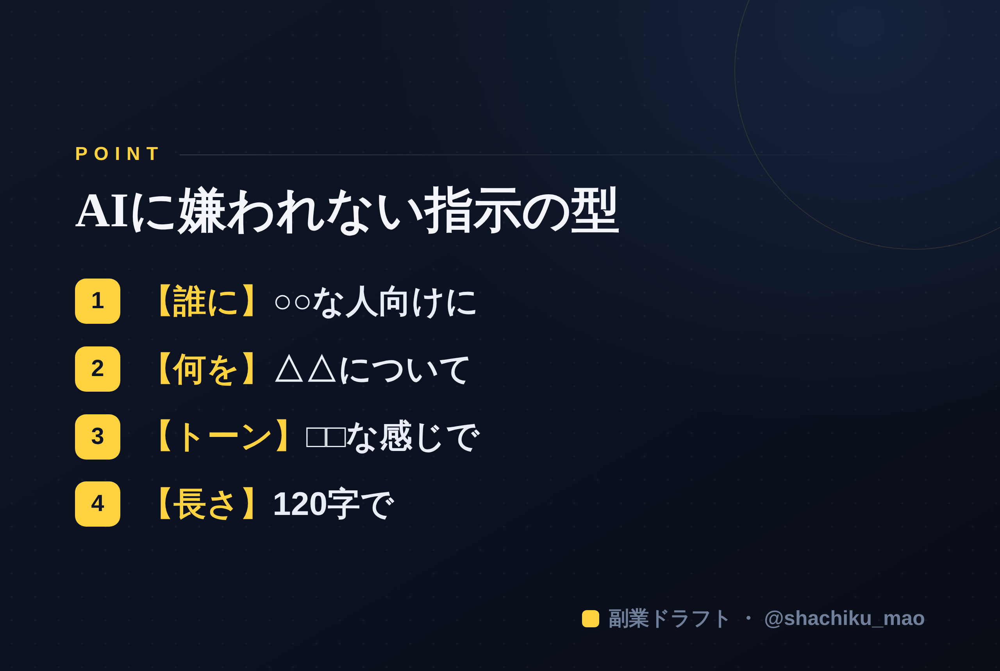

使い方
1. 「タイトルをコピー」→ note のタイトル欄に貼る
2. オレンジのラベルの画像（見出し画像）を note の見出し画像に設定
3. 「本文1をコピー」→ note本文に貼る
4. 青いラベルの位置（本文の途中）に、同じ名前の画像をアップして挿入
5. 「本文2をコピー」→ 続きを貼る
※ 見出しが普通の文字になったら、その行を選んで「大見出し」に設定してください
1. 「タイトルをコピー」→ note のタイトル欄に貼る
2. オレンジのラベルの画像（見出し画像）を note の見出し画像に設定
3. 「本文1をコピー」→ note本文に貼る
4. 青いラベルの位置（本文の途中）に、同じ名前の画像をアップして挿入
5. 「本文2をコピー」→ 続きを貼る
※ 見出しが普通の文字になったら、その行を選んで「大見出し」に設定してください
AIプロンプトのコツ｜「いい感じにして」をやめるだけで出力が変わる
見出し画像に設定：seo-04.png
AIに文章を頼んだのに、薄っぺらい答えしか返ってこない——。その原因のほとんどは、AIの性能ではなく「指示の仕方」にあります。この記事では、特別な知識なしで出力が変わる、プロンプトの基本のコツをまとめます。
9割がやってしまう「いい感じにして」問題
「この内容、いい感じにまとめて」 ——これはAIがいちばん困る指示です。"いい感じ"の基準が分からないので、当たり障りのない一般論になります。
直し方：4つの条件を渡すだけ
次の4つを添えるだけで、出力は別物になります。
【誰に】○○な人向けに 【何を】△△について 【トーン】□□な感じで 【長さ】120字で 書いて。
たとえば「副業初心者向けに、強みの見つけ方について、やさしい口調で、120字で書いて」。これだけで、ぐっと使える文章になります。
もう一段上げる3つのコツ
1. 役割を与える：「あなたは副業プロデューサーです」から始めると、視点が定まる 2. 素材を渡す：一般論しか出ないのは、あなたの"情報"が足りないから。自分の経験や具体例を渡すほど濃くなる 3. 質問させる：「書いて」より「私に質問して」。自分から答えが引き出される方が、オリジナルな内容になる
うまくいかない時のチェック
- 指示があいまい（誰に・何を・トーン・長さが抜けている）
- 素材（自分の情報）が薄い
- 1回で完璧を求めている（AIは"壁打ち"で磨くもの）
本文中に挿入：seo-04-body.png（この記事のポイント）

まとめ
- 「いい感じにして」は卒業
- 【誰に・何を・トーン・長さ】を渡す
- 役割・素材・質問で、さらに濃くなる
※ ここからは宣伝です。 この「質問させる使い方」を仕組みにしたツール「副業ドラフト」を作りました。AIが7つの質問であなたの強みを引き出し、発信の下書きまで手伝います。ヒヤリング・強み棚卸し・Threads3本まで無料で試せます → https://note-threadssf.onrender.com
🎁 コピペで使えるプロンプト集は公式LINEで無料配布中 → https://lin.ee/RzyA13P
役に立ったら、スキ＆フォローで応援してもらえると嬉しいです😊